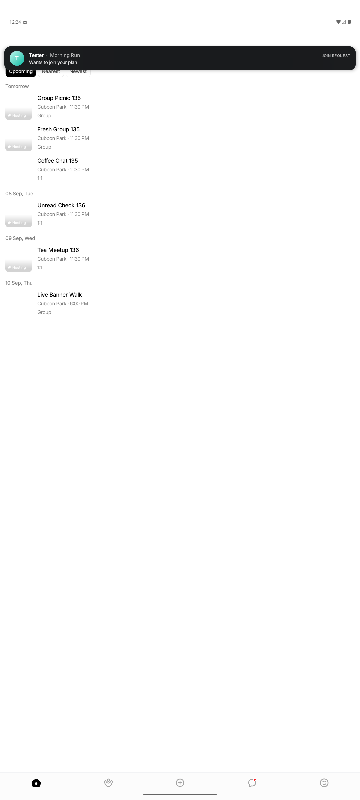
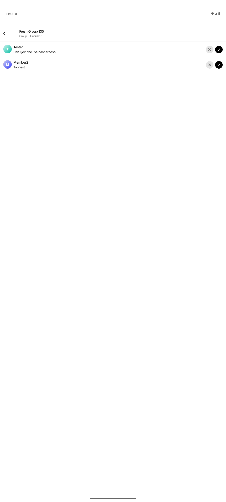
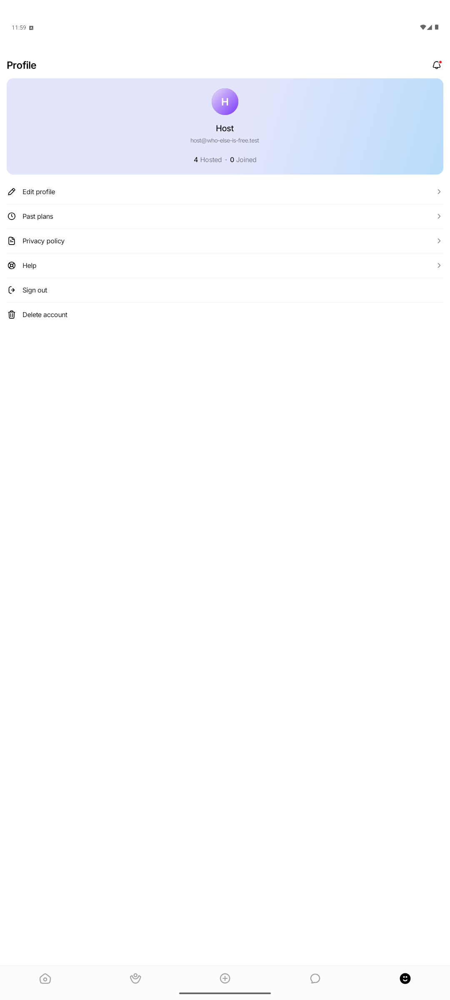
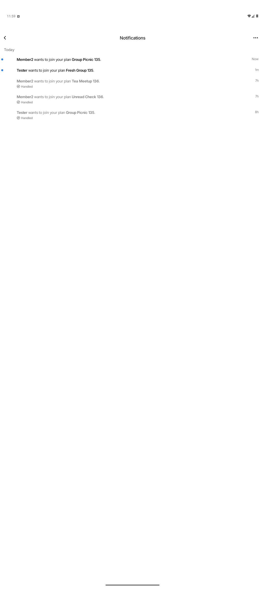
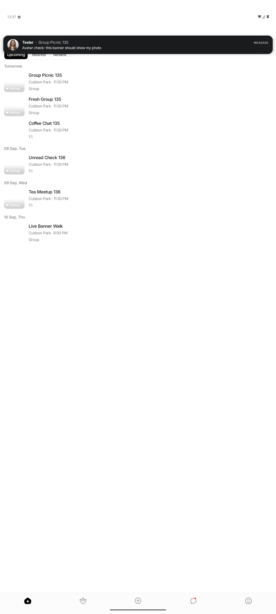
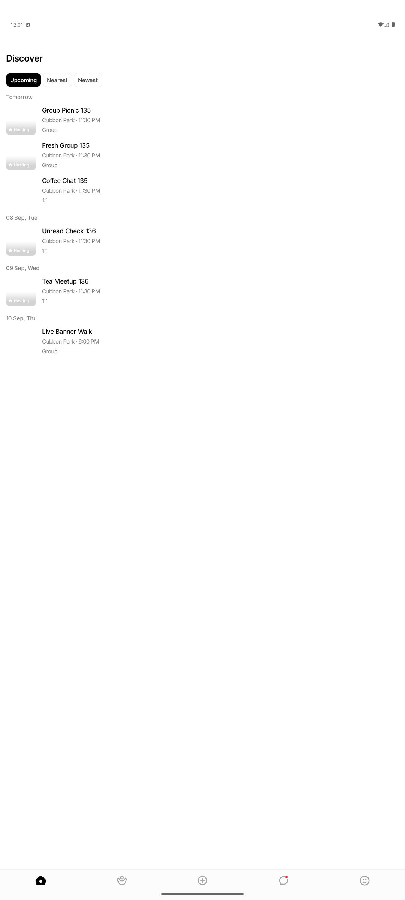
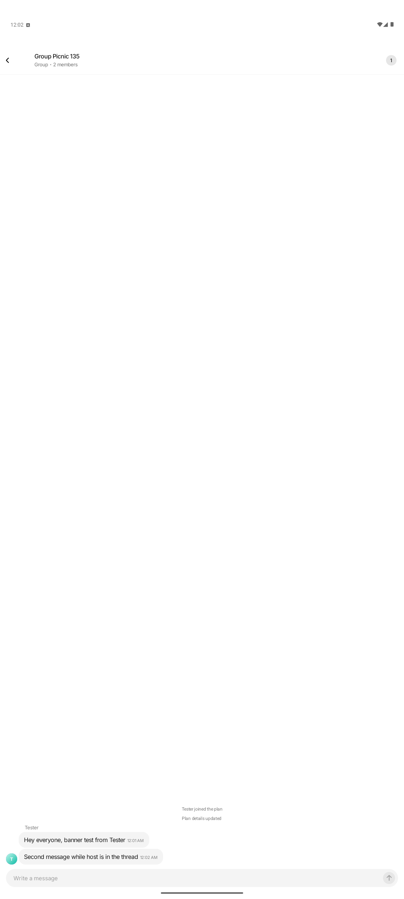
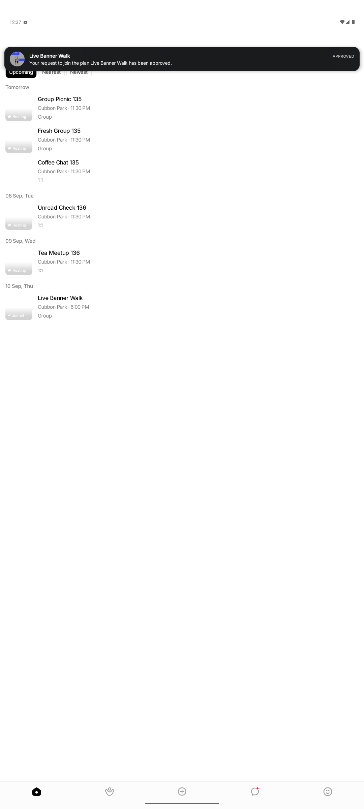

Live inbox updates and the foreground notification banner
The notification inbox now updates the moment a row is written, and a notification that
arrives while the app is open shows up as a tappable banner on whatever screen the person
is on. Both ride on a single new WebSocket frame, notification:new, emitted
for every persisted inbox row.
Outcome at a glance
Before this change the inbox list only reloaded on open or pull-to-refresh, and a foreground push did nothing visible beyond refreshing the bell count. OS push behaviour is unchanged.
One frame, two consumers
The socket is only open while the app is in the foreground, which is exactly when an in-app banner is wanted. So the persisted inbox row is the single source of truth and the frame is just its live delivery.
Recorder inserts the inbox row, as before, then calls
emitNotificationNew.
The frame is enqueued on a per-user channel and fanned out on the hub goroutine.
Owns the socket; forwards every frame to subscribers plus a synthetic
socket:open.
Prepends the row, bumps the unread count, re-syncs the count after reconnects.
Shows the banner unless the inbox or the matching thread is already on screen.
Wire shape
{
"type": "notification:new",
"notification": {
"id": 12, "type": "chat.message",
"event_id": 16, "conversation_id": 13, "join_request_id": null,
"title": "Group Picnic 135",
"body": "Tester: Hey everyone, banner test from Tester",
"payload": "{\"senderName\":\"Tester\",\"senderAvatar\":\"https://…\",\"coverKey\":\"sports-badminton-1\", ...}",
"read": false, "action_state": "active",
"created_at": "2026-09-05T18:31:04.000Z"
}
}
The notification object is the same view GET /api/notifications
returns, so the client reuses its existing mapper and never needs a follow-up fetch.
What changed
Server
server/chat_hub.go gains a direct channel, a
pushToUser fan-out, and emitNotificationNew. Sends are
serialized on the hub goroutine, so the per-user socket map is never read from HTTP or
push goroutines. A full queue logs and drops rather than blocking a request.
server/notification_recorder.go emits after each successful insert in
both recorder paths. Persistence and push delivery are untouched.
Every event-bearing payload now carries the plan's coverKey, and
people-driven payloads carry senderAvatar. Because the same data map is
an FCM data message with a 4 KB cap, payloadAvatar forwards only short
remote URLs and drops inline base64 avatars.
Client contexts
ChatContext exposes subscribeToServerEvents. The dispatch
stays a closed chain for chat frames; observers simply see every frame first.
NotificationsContext ingests notification:new: de-duplicates
by id, keeps offset pagination aligned, counts only active unread rows, and notifies
banner listeners through subscribeToIncomingNotifications.
Banner
NotificationBanner is built on Reanimated and Gesture Handler like the
rest of the app: spring entry, upward-only pan with the pager's swipe thresholds,
timed exit, light haptic on arrival, and a live-region announcement. Visually it uses
the same dark frosted material as EventActionBadge and the Event Details
hero buttons, so it reads as a transient overlay on the app's white screens. Content
is shaped per type by buildBannerContent: people-driven notifications
(messages, join requests) lead with the person's avatar and name and show the plan as
context; outcome notifications lead with the plan and keep the stored body verbatim. A
small uppercase label names the kind.
NotificationBannerHost is mounted once in AppNavigator as a
sibling of the navigation container, so it paints above every screen and the tab bar.
Shared open path
The inbox screen's resolve-then-navigate logic moved into
useOpenNotifications. Banner taps and inbox row taps now call the same
hook, which resolves through POST /api/notifications/actions/resolve and
mirrors the result into inbox state.
New tokens: componentTokens.banner and layout.bannerZIndex.
When the banner stays quiet
| Situation | Behaviour | Where |
|---|---|---|
| Viewing the conversation a chat message lands in | No banner, no inbox row, no push. The message simply appears in the thread. | Server presence suppression, already in place |
| Notifications inbox is on screen | Row appears live at the top of the list; no banner. | shouldSuppressBanner, route check |
| Row arrives already read or no longer actionable | Merged into the list without a banner or count change. | shouldSuppressBanner |
| Navigator not ready (splash, bloom) | Dropped; the inbox still has the row. | shouldSuppressBanner |
| A newer notification arrives while one is showing | Content is replaced in place and the hold timer restarts. | NotificationBanner |
Android evidence
Emulator WEIF_API_36, signed in as Host. Tester and Member2 were driven from
the host shell over REST and a small WebSocket script, so every screenshot shows a real
frame arriving on a real socket.








coverKey, so it renders even when the
plan is not in the user's loaded lists.
Verification results
| Check | Result | Notes |
|---|---|---|
Go TestNotificationNewFrameOverWebSocket |
Pass |
Join request frame matches the REST row; chat frame follows
message:new; sender never receives its own frame; offline recipient
still gets row and push.
|
| Go full suite | Baseline |
Only TestAPIIntegration/list_covers fails, also on the untouched
tree, because cover images are gitignored locally.
|
| Jest, 97 suites | Pass | New coverage for the banner, host suppression rules, the open hook, context ingest and de-dupe, and the ChatContext subscription. Shared Reanimated mock now returns stable shared values. |
| TypeScript | Pass | tsc --noEmit clean. |
| ESLint | Pass | No new warnings in touched files; ChatContext keeps its four pre-existing ones. |
| Android emulator | Pass | Seven scenarios above. Logged in TEST_RUNS.md. |
| iOS | Not run | No simulator in this session. |
Decisions and known limits
- The WebSocket frame is the only banner and live-inbox source. The Firebase foreground handler keeps its cheap unread-count refresh as a reconciliation fallback, so OS push behaviour is byte-for-byte the same.
- Confirmed Decision #9 in the inbox plan, live badge with a lazy list, is superseded: single rows are prepended live, but full-list refetches are still limited to inbox open, pull-to-refresh, and load more.
- While a native bottom sheet modal is open the banner renders beneath it. The inbox row is still there afterwards.
-
The existing off-goroutine read in
shouldSuppressPushwas left as is; the new per-user send deliberately avoids repeating that pattern.
issue-136-chat, with the evidence screenshots under
report/live-notifications-assets/.